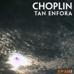

Website of Filipe Cruz, also known as ps or psenough
? About ! Projects ☼ Audiovisuals ♫ Soundscapes
About
I am a Portuguese digital media artist and software developer, currently working with Artica on cool stuff. I'm known to be blunt, friendly and open minded.
From the left side of my brain I develop software in a bucketload of different languages and platforms, mostly things related to computer graphics, but often not so much. I have done all sorts of interactive multimedia, web, desktop and mobile applications. Sometimes for myself, sometimes for others.
From the right side of my brain I am also a demoscener; an amateur poetry and science fiction writer; an abstract line doodler; an hobbyist experimental music artist; and I curate a music label called Enough Records.
I am good at project management, time planning and coordination. I'm not a great coder, but i get things done. I also seem to have a small gift of being able to cut through the time-wasting bullshit.
On the other hand: i gravely suck at graphic design; don't keep touch with friends as much as i should; and have no patience for schemers, bullshitters and marketing people.
Last but not least, i am involved with the Audiência Zero hackerspace / medialab network.
Past
- Freelance software development (Helsinki, 2011-2013)
- Head software developer for Take The Wind - a company doing biomedical multimedia communication (Coimbra, 2008-2011)
- Academic research on optimization algorythms and generative graphics (Porto, 2005-2008)
- MSc Informatics Engineering - pre bologna (FEUP, 2006-2008)
- Informatics Engineering (FEUP, 2001-2006)
- Civil Engineering (FEUP, 1997-2001)
Contact
2013
- Centro de Interpretação de Almada Velha - interactive museum, did software architecture and development with the Artica guys.
- Action Movie Quiz - movie quiz app for iOS.
- Warlight Custom Ladders - custom game ladders system for warlight, a risk-clone web game.
- Movie Quiz (Female Stars) - movie quiz app for iOS.
- Movie Quiz (Male Stars) - movie quiz app for iOS.
- Under a Seering Sky - port to iOS using phonegap.
- Mana Burn - gallery of images, composed as derivative work of Leviathan Sun.
- Fun With Flags - flag quiz app for kids and fans of Sheldon Cooper.
- Leviathan Sun Clock - port to iOS of Leviathan Sun, now with a clock.
- Leviathan Sun - Entry for Payback PC Intro Competition, javascript canvas 4k.
- A Moment Demystified - music release of field recordings and drones. Available through Attenuation Circuit.
2012
- A Moment to Sleep - music release of field recordings and drones. Available through Auricular Records.
- Corrupt Ladder - web-based gamebook, made in javascript, part of Sapo Codebits 2012 48h project.
- LCD Mostra-se - field recordings album of the self-titled LCD projects showcase event that took place in June.
- Becoming 1337 - Sci-fi web-based gamebook, made in javascript.
- Parsley State - Entry for DemoJS 2012 browser 10k competition, javascript canvas.
- Under a Seering Sky - Sci-fi web-based gamebook, made in javascript.
- Wake Up! - music release of dark ambient and industrial sounds with some social activism.
- Cyboman 5 - Entry for Stream 2012 Tiny Intro Competition, javascript canvas 4k.
- Your Dog Book - A mobile application developed using Phonegap and Sencha Touch. Allows the user to manage and browse information about their dogs. Available for iOS.
- Spreading Love Liebe Amor - Entry for JS1K, online javascript canvas 1k competition.
- Paint Video Signals - Experimental audiovisual project developed in collaboration with Andrea Inocêncio at an AZ Labs residency in Montemor.
- 99 Anonymous - Series of mixtapes on the topics of Anonymous / #antisec / Wikileaks / Occupy Wall Street / SOPA / ACTA / #pl118.
- Your Cat Book - A mobile application developed using Phonegap and Sencha Touch. Allows the user to manage and browse information about their cats. Available for Android and iOS.
2011
- Your Baby Book - A mobile application developed using Phonegap and Sencha Touch. Allows the user to manage and browse information about their babies. Available for Android and iOS.
- Shogun Neophyte - A small webdemo about networking graphics. Hacked the stripthis webcomic tool to do something more then it was designed for.
- Nuclear Taco Sensor Helmet Gameshow - 48h hack project for Sapo Codebits 2011, involving Arduino, OpenFrameworks and some presentation skills. We won the audience vote award.
- Energy Wasters Anonymous - Smartphone social networking game for PT Innovation Challenge, game prototype to help society waste less energy.
- Play With Fire - Interactive art installation project. Helped develop the smartphone application part of the project.
- AnonMirror - Interactive art installation project commissioned by Espaço do Tempo and Ciência Viva. Used the Kinect with LibCinder to call for Anonymous social awareness.
- pgen - Generative graphics and sound in a processingJS demo.
- Blind Serpent - Remix of a WebGL demo.
- Appendix - Art installation project by Laura Beloff, helped develop PHP web scrapping technology and integration with Twitter API.
- Lab La Bla - Theater performance by Marionet, helped develop projection of word scrambling algoryhtm technology, made using Processing.
Demology
Dick Grayson's Darkest Secrets

[online] - [pouet]
Violent Nature
[pouet]
Leviathan Sun

[online] - [pouet] - [making of]
Parsley State

[online] - [pouet] - [making of]
Under a Seering Sky

[online] - [pouet] - [making of]
Cyboman 5

[online] - [pouet] - [making of]
Shogun Neophyte

[online] - [pouet]

Blind Serpent

[online] - [pouet]
Anoxia Redux
[download - pouet]
Winter Breathe
[download - pouet]

Deep
[download - pouet - source]
080808 of the death

[minisite - download - pouet]
your song is quiet, pt2

[download - pouet]
the lost religion of light

[minisite - download - pouet]

fr-059: disintegrates
[download - pouet]
fr-056: gravity of the moon
[download - pouet]
fr-055: 828
[download - pouet]

p351

[minisite - download - pouet]
a deepness in the sky - dark & long remix

[download - pouet]
untitled bp05 intro

[minisite - download - pouet]
fr-045: life after
[download - pouet]

electro glide in black

[download - pouet]
ana

[download - pouet - remix - pouet]
minimalartifact_1

[download - pouet]
toptiny greenretork

[download - pouet]

toptiny redexit

[download - pouet]


true

[download (dos only) - pouet]

bel wazoo

[download (dos only) - pouet]
Talks
130802 - History of web browser demos @ Assembly 2013 (Helsinki) [slides - video]121115 - Javascript Canvas Audiovisual Light and Magic @ Sapo Codebits 2012 (Lisboa) [slides - video]
110804 - Remix Culture In The Demoscene @ Assembly (Helsinki) [slides - video]
091212 - Taxesss from Nothing @ AZ Hacklab meeting (Porto) [video]
091203 - Hacking The Demoscene From Portugal @ Sapo Codebits 2009 (Lisboa) [stream - slides]
091110 - xDA Talks #1 - Demoscene @ xDA (Coimbra)
090913 - Enough is Enough - Movimento Netaudio em Portugal @ Barcamp PT Setembro 09 (Coimbra)
090323 - Deep - Hacking Processing for ogl shaders @ Barcamp PT Spring 09 (Coimbra)
09???? - Demoscene at Festival Animatu @ CAEP (Portalegre)
0811?? - Semana Multimedia @ Teatro Aveirense (Aveiro)
081025 - Demoscene Seminar @ Helsinki Art Academy (Helsinki/Finland)
081023 - LCD Talks #1 - Demoscene @ LCD (Matosinhos)
08???? - Demoscene Festival Animatu @ Bar do Desassossego (Beja)
07???? - Demoscene Festival Animatu @ Teatro Pax Julia (Beja)
?????? - Demoscene @ Semana Académica IST (Lisboa)
060325 - Como hoder la escena @ ifparty (Univ. Pol.) (Valencia/Spain)
050624 - What is the demoscene? @ Demozone (Biddinghuizen/Holland)
031227 - Estado da arte na demoscene @ KEP2 (V.N. Gaia)
02???? - Demoscene workshop @ DEI-FCUP (Porto)
Events Organized
Helsinki Pubmeet 150205Helsinki Pubmeet 150118
ScenePT Demoilta #8
ScenePT Demoilta #7
ScenePT Demoilta #6
ScenePT Demoilta #5
ScenePT Demoilta #4
ScenePT Demoilta #3
ScenePT Demoilta #2
ScenePT Demoilta #1
inérciaDemoparty 2012
inérciaDemoparty 2010
inérciaDemoparty 2008
inérciaDemoparty 2006
inérciaDemoparty 2005
demoscene summer tour 2005
kep3
inérciaDemoparty 2004
kep2
inérciaDemoparty 2003
inérciaDemoparty 2002
bustrip to mekka symposium 2002
inérciaDemoparty 2001
Releases
 | Various Artists - Noise from Portugal vol.1 [Mi228] 7) ps - Annealing Scythe [release page] |
| Various Artists - AtlanThis 2 [erncmp20] 5) ps vs Infetu - Last Wave [release page] | |
| Various Artists - Implanted [ACPS1002] 7) ps - umi no drone 121215 [release page] | |
| ps - A Moment Demystified [ACP1008] 1) ps - A Moment Demystified [release page] | |
 | Various Artists - No Labels No Musics 4 [EdP058] ps - Vague Mark of Absence [release page] |
 | Various Artists - 100 Years of Noise [enrcmp18] 4) ps - 100 Years of Government Corruption [release page] |
| ps - A Moment to Sleep 1) Demoparty Sleeping Halls 2) Dreamstate, Eye Witness, Part 1 3) Dreamstate, Eye Witness, Part 2 4) Leaving Helsinki in a State of Perpetual Quagmire 5) Too Tired to Sleep at Those Electrolyte Airports 6) Fading Under City Trees [release page] | |
 | Various Artists - Loxodromia 200 [mimi200] 11) ps - A Moment to Sleep (ckz manipulation) [release page] |
| Politiquisses - Apresenta: "Corrupção em Portugal por Paulo Morais" Songified 1) Politiquisses - Nós Hoje Temos Uma Crise 2) Politiquisses - É Inexplicável, É Inconcebivel 3) Politiquisses - Nós Não Estamos Habituados a Este Tipo de Frontalidade [release page] | |
 | Various Artists - SIGNALVOID [release page] |
| ps - LCD Mostra-se [AZSA_01] 1) ps - Via Verde Highway Exit 2) ps - Inside CAAA 3) ps - Walking the Streets of Guimarães, Part 1 4) ps - Arriving at Éfaté's location 5) João Carvalho - Éfaté 6) ps - Walking the Streets of Guimarães, Part 2 7) ps - The Building at Praça 25 de Abril 8) ps - Walking the Streets of Guimarães, Part 3 9) ps - Creatura 10) ps - Anonymous Mirror 11) ps - The Solitude is Sore 12) ps - A Beer Break, Lacking Lupin Beans 13) ps - Tripit 14) ps - Taking Things Down [release page] - [download] | |
| ps - Wake Up [enrmp300] 1) ps - Wake Up Part 1 1) ps - Wake Up Part 2 1) ps - Wake Up Part 3 1) ps - Wake Up Part 4 1) ps - Wake Up Part 5 1) ps - Wake Up Part 6 [release page] - [download] | |
| Various Artists - No Labels No Musics III [EdP051] 17) ps - night of the living swans [release page] - [download] | |
| Various Artists - AtlanThis [enrcmp16] 2) ps - Structura Cava (Structura remix) 4) ps - Over the Atlantic Rift [release page] - [download] | |
| ps - Hämeentie [ihab037] 1) ps - Hämeentie [release page] - [download] | |
| ps - Juhannus [gfr028] 1) ps - Bus 24 Helsinki seurasaari 2) ps - Bridge to Seurasaari 3) ps - Forging a Nail 4) ps - Horn 5) ps - Traditional Dances 6) ps - Bonfire Shore 7) ps - Top of the Island 8) ps - Windy South Shore 9) ps - Waiting for the Main Bonfire 10) ps - Bus 24 Seurasaari Helsinki 11) ps - L Train Helsinki Leppavaara [release page] - [download] | |
| d0x10 - Gay Noise - ps - playing with nuns (4 way split) 1) ps - 110701b [release page] - [download] | |
| ps - Never Step On Moss Again [treetrunk152] 1) ps - Tardigrade Transmission of Self-determination 2) ps - Arise, My Volvox Bethren 3) ps - Reign of Worms, Locust Hydra [release page] - [download] | |
| Various Artists - no-r-mal II [jnn100] CD6 1) ps - ni100603 [release page] - [download] | |
| ps - New Impulses to Old Elements [EdP029] 01) New Impulses to Old Elements Recorded Live @ Convento da Saudação (Montemor-o-Novo) 100712 Part of AZLabs residency @ O Espaço do Tempo [release page] - [download] | |
| ps - futuradio090905 [KOOI0028] 01) psmac_001_090120 (00:00) 02) psmac_015c_090314 (00:00) 03) psmac_011_081202 (01:27) 04) psmac_015d_090526 (02:26) 05) psmac_012_090113 (04:12) 06) psmac_012_090113_2 (05:00) 07) psmac_014_090310 (05:00) 08) 352_080301 (06:36) 09) psmac_012_090113_2 (07:32) 10) psmac_014_090125 (13:57) 11) psmac_010_081004 (14:02) 12) asio005_090812 (20:46) 13) psmac_015c_090314 (21:03) 14) 346_080609 (26:48) [release page] - [download] | |
| Wolfenmond - Neumond 14) ymir remix - filipe cruz [online store] | |
| ps - m&m [EdP008] 1) psmac017_s001 2) psmac017_s002 3) psmac017_s003 4) psmac017_s004 5) psmac017_s005 6) psmac017_s006 7) psmac017_s007 [release page] - [download] | |
 | Various Artists - 1 [bpf003] 1) ps - 297b_090215 [download] |
| kdes vs ps - Live Helsinki 27 Oct 2008 [enrmp200] 1) kdes vs ps - 1 2) kdes vs ps - 2 3) kdes vs ps - 3 [download] | |
| Various Artists - This is Industrial [pt] [enrcmp12] 2) ps vs Sektor 304 - Toxic Malice [download] | |
| Various Artists - Winter Solstice [TLMP10] 4) gróhvrascht - bulk [release page] - [download] | |
| ps - 080319 [AT013] 1) ps - 304_080319 2) ps - 332l_080319 3) ps - 327_080319 / Life After / Finally The Moment Has Past 4) ps - 274_080319 / Gravity Of The Moon 5) ps - 353c_080319 6) ps - 332k_080319 7) ps - The Lost Religion Of Light 8) ps - Disintegrates 9) ps - 303_080319 [release page] - [download] | |
| Various Artists - Falésia 2 [enrcmp11] cd2 9) ps vs a naked lunch - untitled [download] | |
| gróhvrascht - zimrenooord [TMLP05] 1) gróhvrascht - runtime 2) gróhvrascht - laptop 3) gróhvrascht - tester 4) gróhvrascht - limiter 5) gróhvrascht - hendrix 6) gróhvrascht - slash 7) gróhvrascht - plague [download] | |
 | ps - Closing In [MIFR-667] 1) ps - Finally The Moment Has Past (348_080301) 2) ps - Still Waiting On Your Priorities (332l_080301) 3) ps - Help Me! (352_080301) [release page] - [download] |
| Various Artists - Thisagree & Shadow / Entulho Sonoro 4 [thisk.43] 11) ps - Finally The Moment Has Past [release page] | |
| ps vs sektor304 - ps vs sektor304 [enrmp154] 1) ps vs sektor304 - 11:49 2) ps vs sektor304 - 10:45 3) ps vs sektor304 - 17:51 4) ps vs sektor304 - 9:44 5) ps vs sektor304 - 4:57 6) ps vs sektor304 - 6:45 7) ps vs sektor304 - 14:20 [download] | |
| Various Artists - Your Life Has Been Mastered For You [ZH27-966] release page | |
| Various Artists - datacross.1 [enrcmp07] 1) ps - 350 070904 5) ps - 348 070926 [download] | |
| ps - friends reinterpretations of unreleased 332 variations volume 3 [mir025] 1) ps - 332 variation (nosfe's 332i_060211remixv2) 2) ps - 332 variation (rngmnn's cereza negra) [release page] - [download] | |
| ps - friends reinterpretations of unreleased 332 variations volume 1 [tube076] 1) ps - 332 variation (prolepse's 02 remix) 2) ps - 332 variation (etc remix) [release page] - [download] | |
| Various Artists - Falésia [enrcmp06] cd2 2) ps - 345 070423 [download] | |
| Various Artists - Sound Research [enrcmp05] 1) ps vs xastre - untitled [download] | |
| ps - friends reinterpretations of unreleased 332 variations volume 4 [mimi065] 1) ps - 332 variation (nny mix) [release page] - [download] | |
| nny - nny++ [cdrasud015] 1) nny vs ps - 001 3) ps vs nny - 003 | |
| ps - friends reinterpretations of unreleased 332 variations volume 2 [enrmp081] 1) ps - 332 variation (infetu's vrsnsmv smqlivb remix) 2) ps - 332 variation (e:4c's untitled remix) 3) ps - 332 variation (dream metaphor's procyon mix) [download] | |
 | ps - shell/esuna/dispel [mimi052] 1) ps - 332_051230 2) ps - 332b_051231 3) ps - 332d_060105 (edit) 4) ps - 332c_060105 5) ps - 332e_060108 6) ps - 329_051030 [release page] - [download] |
| dotkràz vs idle sunder vs casual coincidence - rust [ntt037] 1) dotkràz vs idle sunder - reflectional feedback 2) idle sunder vs dotkràz - shedding memory 3) idle sunder vs casual coincidence - the burden of secrets 4) casual coincidence vs dotkràz - rusted faith 5) dotkràz vs idle sunder - a course of deliverance [release page] - [download] | |
| ps - shimoyake ai (338_060824) [enrmp076] 1) ps - in 2) ps - z [download] | |
| JM - Silent Approach [idmix15] 12) dotkràz - 04 [release page] - [download] | |
|  | choplin - tan enfora [op3n002] 1) ps - she simply doesn't care anymore [release page] - [download] |
| lithis - untitled ep [enrmp060] 6) lithis - mörkret (ps mörk ängel remix) 7) ps - aldrig [download] | |
| Various Artists - music for elevators vol.2 [mhrk033] 11) ps - 325 050919 [download] | |
| nny - ect [tube026] 10) nny - 1noise (ps mix) [release page] - [download] | |
| ps - music for sketching ghosts in the dark [mir013] 1) ps - like butterflies dancing without wings 2) ps - she simply doesn't care anymore 3) ps - harnessing low voltage under an ivory iron curtain [release page] - [download] | |
| dotkràz - untitled [ntt027] 1) dotkràz - 01 2) dotkràz - 02 3) dotkràz - 03 4) dotkràz - 04 [release page] - [download] | |
| Various Artists - alien artifact [enrcmp04] [download] | |
| Various Artists - corrupted cause [slsk005] [release page] - [download] | |
| Say My Lovehole, Hanga Gallon - Universumix [ntt014] 11) ps+erratic [release page] - [download] | |
| Various Artists - dark vault [enrcmp03] 1) ps - 320_030905 [download] | |
| duncan avoid - cybernetics [enrmp030] 12) duncan avoid - into matter (ps 301_030611_remix) [download] | |
| 5e phalanx - pragmatic impulse [ntt001] 1) 5e phalanx - pragmatic impulse [release page - download] | |
| Various Artists - as we struggle thru these times [idtv-mp3018] 8) ps - kaul-li zakhu [release page] | |
| ps - a girl raped before her marriage is forever a whore [tns006] 1) ps - if i could only say i love you 2) ps - all is full of love (yes, i know) 3) ps - father joseph's piano lessons 4) ps - father joseph's piano lessons (post) 5) ps - all is full of love (no, you don't) [release page] | |
| ps - everything is useless without you [enrmp029] 1) ps - 081_030222 2) ps - 265_021216 (feat. sinebag) 3) ps - 299_030602 4) ps - 286_030321 5) ps - 295_030604 6) ps - 232_020721 [download] | |
| ps - don't [enrmp013] 1) ps - ps-005_23102002 2) ps - ps-249_22102002_inverti 3) mental anguish - reign of locusts (ps_remx01) [download] | |
| ps - i love you [enrmp012] 1) ps - track01 2) ps - track02 3) ps - track03 4) ps - track04 5) ps - track05 6) ps - track06 7) ps - track07 8) ps - track08 9) ps - track09 10) ps - track10 [download] | |
| ps - benfield no travel sprite bubbles and a rice cup of cake [enrmp009] 1) ps - benfield 2) ps - ps-201_08062002 [download] | |
| ps - from my own little corner [enrmp001] 1) ps - lost in familiar alleys 2) ps - while she is not here 3) xhale vs ps - two seconds of time [download] | |
Reviews"Cerrado. Prosseguindo com o seu intenso trabalho de disseminação, ps (a.k.a. Filipe Cruz) tem um novo registo. Este chama-se “m&m” e é uma edição da netlabel Editora do Porto. É uma torrente sonora densa e avassaladora, de um noise cada vez mais apurado. Dark. Incisivo. 20 segundos; é o tempo que dura cada uma das primeiras quatro faixas de “m&m”. Sombrio." - Rui Dinis / A Trompa "...num cocktail de glitch, noise e industrial...saboroso. Hoje é ps (Filipe Cruz) e Sektor304 (André Coelho e João Filipe), num frente a frente gravado numa jam improvisada. Um embate colossal de pura experimentação; eléctrico, electrónico, acústico ou computorizado, "ps vs sektor304" explora os limites da criação, da interacção... grande edição Enough Records!" - Rui Dinis / A Trompa "ps., aka Filipe Cruz, jovem experimentador sonoro de Vila Nova de Gaia, e entusiasta da netlabel lusa Enough Records, lançou há pouco tempo um EP na congénere sueca mirakelmusik. Este projecto surge na sequência de outros ligados à música electrónica em que Filipe Cruz se tem envolvido, em paralelo com a actividade ligada à engenharia de computadores e ao experimentalismo pseudogenerativo. O EP de que falo, denominado music for sketching ghosts in the dark, consubstancia-se em três peças, tituladas respectivamente 1) Like butterflies dancing without wings; 2) She simply doesn't care anymore; e 3) Harnessing low voltage under an ivory iron curtain. As peças - duas longas, à volta dos 12 minutos cada, com uma de 4 pelo meio - mesclam sons de electroestática digital com ondas dronológicas em fundo, desenvolvendo-se as texturas e os sinais sonoros em diferentes planos, com enorme profundidade de campo. A massa sonora de glitch e micro-sons (como ondas-curtas) move-se lentamente, criando ambientes minimalistas tensos e escuros, quase sinistros, sublinhados por ocasionais descargas de baixas frequências. Trabalho muito bem feito. Pode ser descarregado e ouvido a partir da página da mirakelmusic.." - eduardo chagas 9-10-2005 "Effective glitch and static walls built w/ a touch of drone scapes and low end rumblings. Nicely done 5+." - phoenelai++ 17-8-2005 "Slow moving thunder and electrostatic glitches melted together to form threating drones. Very minimal yet well composed songs. The tracks aren't changing very much buy they reveal a nice and dark sphere. Very Good!" - Kasper van Hoek 17-8-2005 | |
Live Concerts120504 - ps featuring The Antti Jadertpolm Quartet @ Dream House Special - Lähiradio (Helsinki, Finland)120226 - ps @ Flausina (Lisbon) 111231 - ps @ Skeneklubi (Helsinki, Finland) 111223 - ps featuring gmr, Festival Matanças @ Casa Viva (Porto) 110622 - ps, Kuucvaals 4 @ ??? (???/Latvia) 100919 - ps + samuel xharope +++ @ Galerias Santa Clara (Coimbra) 100712 - ps @ Convento da Saudação (Montemor-o-Novo) 100709 - ps @ Associação 25 Abril (Lisboa) 100109 - ps vs André Coelho @ Fábrica de Som (Porto) 090725 - Structura vs ps @ Revolver Bar (Cacilhas) 090430 - ps vs Sektor 304, STFU Porto 09 @ Fábrica de Som (Porto) 081027 - kdes vs ps, Oksasenkatu 11 (Helsinki/Finland) 081025 - kosmoplovci++, Altparty @ Helsinki Cable Factory (Helsinki, Finland) 080703 - ps, opening for One Man Nation @ Casa Viva (Porto) 080614 - ps vs Sparagmos, opening for Hyaena Reich, Vysehrad and EYE8SOCCER @ Fábrica de Som (Porto) 080516 - ps, BPF Porto, opening for OCP @ Pitch Club bar area (Porto) 080424 - ps, STFU Porto 08 @ Fábrica de Som (Porto) 080405 - ps, opening for Feltro @ O Século (Lisbon) 080222 - ps vs Sektor 304, Enough Noise @ Fábrica de Som (Porto) 070602 - ps, opening for VelgeNaturlig and Stalker Vitki @ Fáb. de Som (Porto) 060526 - Aenedra, opening for Sam Pull @ Fon. Mun. de Lisboa (Lisbon) 031102 - Aenedra, ExperimentaDesign2003 @ Teatro S.Miguel (Lisbon) 02???? - Aenedra, ??? trance party chillout area (Figueiró dos Vinhos??) | |
Talks & Interviews1205?? - M2HZ Dream House Interviews / Documentary120223 - Noise a Noite @ Rádio Zero 110430 - ps / Enough Records @ Pete Cogle's Podcast 100605 - CCC Pequeno é bom! @ Casa da Achada (Lisboa) (registo video) 090913 - Enough is Enough - Movimento Netaudio em Portugal @ Barcamp PT Setembro 09 (Coimbra) | |
Photos | |
Organized Events100109 - Falésia 3 release party090828 - Beats Play Free 090430 - STFU Porto 2009 081003 - Beats Play Free 080614 - Falésia 2 release party 080424 - STFU Porto 2008 080222 - Enough Noise 070921 - Enough Noise 070714 - Enough Electroshit 070602 - Falésia release party 070511 - PsychotekTrauma release party 070315 - STFU Porto 2007 | |
{kind=link}
{kind=link}
{kind=link}
{kind=link}
{kind=link}
{kind=link}
{kind=link}
{kind=link}
{kind=link}
{kind=link}
{kind=link}